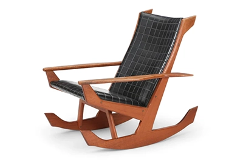

FOLKE OHLSSON RECLINING LOUNGE CHAIR + OTTOMAN IN OAK
Origin: 1960s Sweden

HOLGER GEORG JENSEN "JET" ROCKING CHAIR IN TEAK
Origin: 1950s Denmark
FOLKE OHLSSON "PROFILE RECLINING LOUNGE CHAIR
Origin: 1960s Sweden
OX STYLE WINGBACK SWIVEL LOUNGE IN BLACK VINYL
Origin: 1960s Denmark

"FORMULA" LOUNGE CHAIR AND OTTOMAN BY RUUD EKSTRAND & CHRISTER NORMAN
Origin: 1970s Sweden
RARE KURT ØSTERVIG LOUNGE CHAIR IN CRIMSON WOOL
Origin: 1950s Denmark
MODEL 166 SENATOR LOUNGE CHAIR BY OLE WANSCHER
Origin: 1960s Denmark
ARNE HOVMAND OLSEN SCISSOR LOUNGE CHAIR IN TEAK + BEECH
Origin: 1960s Denmark
SVEND SKIPPER HIGHBACK LOUNGE CHAIR IN RUST LEATHER
Origin: 1960s Denmark